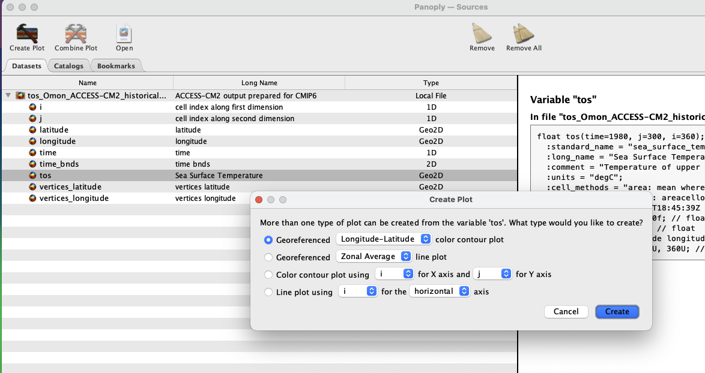
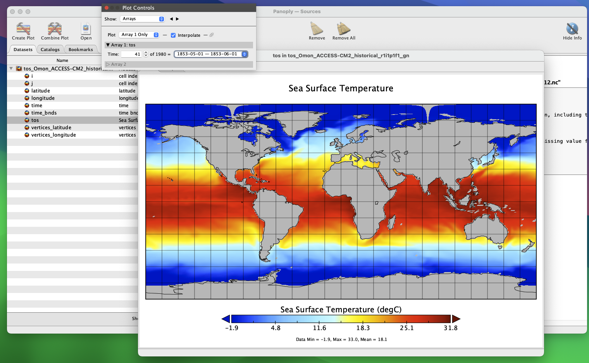
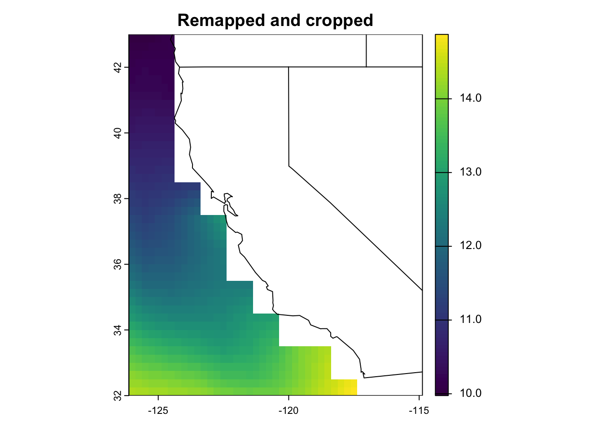

rr <- rast(paste0(pth, cmip_pth, "/tos_Omon_ACCESS-CM2_historical_r1i1p1f1_gn_185001-201412.nc"))
rr <- rr[[1]] #the first layer
plot(rr)
Note that interpolation, regridding and remapping mean the same thing (for the purposes of our workshop).
We can quickly visualize what our ESM outputs look like, using the Panoply software. Panoply is a great tool to quickly inspect netCDF files, without reading them into R.
Open one of the .nc files in Panoply. You’ll see the dashboard below. The left pane shows the variables and dimensions contained within the file. The right pane shows the metadata in netCDF format.

To view a map, click on the variable tos, and then Create Plot in the top left hand corner. A new dialogue box pops up - accept the defaults and click Create.

Now you can see a 2D field of sea-surface temperature for your time period of interest, and Panoply has georeferenced it. You can cycle between months in the Plot Controls dialogue box. If you can’t see this, click Window -> Plot Controls from the Toolbar. Now, you can zoom in and move the plot around at will.

Panoply is great for quickly visualizing .nc files, but we can’t do any spatial analyses - we now need R. Let’s plot a layer of one of the ESMs we have downloaded, to see what it looks like.
rr <- rast(paste0(pth, cmip_pth, "/tos_Omon_ACCESS-CM2_historical_r1i1p1f1_gn_185001-201412.nc"))
rr <- rr[[1]] #the first layer
plot(rr)
Ew! What’s going on here!?
Different institutions can serve their ESM’s on different grids. For example, many ESM grids are georeferenced on a sphere, where pole singularities and convergence of longitude meridians at the poles present issues for data visualisation. Panoply took care of this internally, but in R, we need to remap our files from a spherical grid to a rectangular grid. The most common remapping ‘method’ between grids with spherical coordinates is with bilinear interpolation.
You can also use first order conservative remapping if bilinear interpolation fails (which may occur if the input grid is ‘unstructured’ as opposed to ‘spherical’).
First, let’s inspect the metadata associated with our source input file using terra
rrclass : SpatRaster
size : 300, 360, 1 (nrow, ncol, nlyr)
resolution : 1, 1 (x, y)
extent : -0.5, 359.5, -0.5, 299.5 (xmin, xmax, ymin, ymax)
coord. ref. :
source : tos_Omon_ACCESS-CM2_historical_r1i1p1f1_gn_185001-201412.nc:tos
varname : tos (Sea Surface Temperature)
name : tos_1
unit : degC
time (days) : 1850-01-16 ncdf4::nc_open()
This gives you the same information after reading a file into Panoply.
nc <- nc_open(paste0(pth, cmip_pth, "/tos_Omon_ACCESS-CM2_historical_r1i1p1f1_gn_185001-201412.nc"))
ncFile /Users/admin/Documents/GitHub/esmrworkshop_rladies26/__data/cmip6_raw/tos_Omon_ACCESS-CM2_historical_r1i1p1f1_gn_185001-201412.nc (NC_FORMAT_NETCDF4_CLASSIC):
6 variables (excluding dimension variables):
double time_bnds[bnds,time] (Chunking: [2,1]) (Compression: level 1)
double latitude[i,j] (Chunking: [360,300]) (Compression: level 1)
standard_name: latitude
long_name: latitude
units: degrees_north
missing_value: 1e+20
_FillValue: 1e+20
bounds: vertices_latitude
double longitude[i,j] (Chunking: [360,300]) (Compression: level 1)
standard_name: longitude
long_name: longitude
units: degrees_east
missing_value: 1e+20
_FillValue: 1e+20
bounds: vertices_longitude
double vertices_latitude[vertices,i,j] (Chunking: [2,360,300]) (Compression: level 1)
units: degrees_north
missing_value: 1e+20
_FillValue: 1e+20
double vertices_longitude[vertices,i,j] (Chunking: [2,360,300]) (Compression: level 1)
units: degrees_east
missing_value: 1e+20
_FillValue: 1e+20
float tos[i,j,time] (Chunking: [360,300,1]) (Compression: level 1)
standard_name: sea_surface_temperature
long_name: Sea Surface Temperature
comment: Temperature of upper boundary of the liquid ocean, including temperatures below sea-ice and floating ice shelves.
units: degC
cell_methods: area: mean where sea time: mean
cell_measures: area: areacello
history: 2019-11-08T18:45:39Z altered by CMOR: replaced missing value flag (-1e+20) with standard missing value (1e+20).
missing_value: 1.00000002004088e+20
_FillValue: 1.00000002004088e+20
coordinates: latitude longitude
5 dimensions:
time Size:1980 *** is unlimited ***
bounds: time_bnds
units: days since 1850-01-01
calendar: proleptic_gregorian
axis: T
long_name: time
standard_name: time
j Size:300
units: 1
long_name: cell index along second dimension
i Size:360
units: 1
long_name: cell index along first dimension
bnds Size:2 (no dimvar)
vertices Size:4 (no dimvar)
47 global attributes:
Conventions: CF-1.7 CMIP-6.2
activity_id: CMIP
branch_method: standard
branch_time_in_child: 0
branch_time_in_parent: 0
creation_date: 2019-11-08T18:45:44Z
data_specs_version: 01.00.30
experiment: all-forcing simulation of the recent past
experiment_id: historical
external_variables: areacello
forcing_index: 1
frequency: mon
further_info_url: https://furtherinfo.es-doc.org/CMIP6.CSIRO-ARCCSS.ACCESS-CM2.historical.none.r1i1p1f1
grid: native atmosphere N96 grid (144x192 latxlon)
grid_label: gn
history: 2019-11-08T18:45:44Z ; CMOR rewrote data to be consistent with CMIP6, CF-1.7 CMIP-6.2 and CF standards.
initialization_index: 1
institution: CSIRO (Commonwealth Scientific and Industrial Research Organisation, Aspendale, Victoria 3195, Australia), ARCCSS (Australian Research Council Centre of Excellence for Climate System Science)
institution_id: CSIRO-ARCCSS
mip_era: CMIP6
nominal_resolution: 250 km
notes: Exp: CM2-historical; Local ID: bj594; Variable: tos (['sst'])
parent_activity_id: CMIP
parent_experiment_id: piControl
parent_mip_era: CMIP6
parent_source_id: ACCESS-CM2
parent_time_units: days since 0950-01-01
parent_variant_label: r1i1p1f1
physics_index: 1
product: model-output
realization_index: 1
realm: ocean
run_variant: forcing: GHG, Oz, SA, Sl, Vl, BC, OC, (GHG = CO2, N2O, CH4, CFC11, CFC12, CFC113, HCFC22, HFC125, HFC134a)
source: ACCESS-CM2 (2019):
aerosol: UKCA-GLOMAP-mode
atmos: MetUM-HadGEM3-GA7.1 (N96; 192 x 144 longitude/latitude; 85 levels; top level 85 km)
atmosChem: none
land: CABLE2.5
landIce: none
ocean: ACCESS-OM2 (GFDL-MOM5, tripolar primarily 1deg; 360 x 300 longitude/latitude; 50 levels; top grid cell 0-10 m)
ocnBgchem: none
seaIce: CICE5.1.2 (same grid as ocean)
source_id: ACCESS-CM2
source_type: AOGCM
sub_experiment: none
sub_experiment_id: none
table_id: Omon
table_info: Creation Date:(30 April 2019) MD5:e14f55f257cceafb2523e41244962371
title: ACCESS-CM2 output prepared for CMIP6
variable_id: tos
variant_label: r1i1p1f1
version: v20191108
cmor_version: 3.4.0
tracking_id: hdl:21.14100/0bcaaa74-aedb-4d45-a5e5-cb3ab467f2b5
license: CMIP6 model data produced by CSIRO is licensed under a Creative Commons Attribution-ShareAlike 4.0 International License (https://creativecommons.org/licenses/). Consult https://pcmdi.llnl.gov/CMIP6/TermsOfUse for terms of use governing CMIP6 output, including citation requirements and proper acknowledgment. Further information about this data, including some limitations, can be found via the further_info_url (recorded as a global attribute in this file). The data producers and data providers make no warranty, either express or implied, including, but not limited to, warranties of merchantability and fitness for a particular purpose. All liabilities arising from the supply of the information (including any liability arising in negligence) are excluded to the fullest extent permitted by law.We can see that the resolution of our file is 1˚, and is on a 0-360˚ lat/lon grid. Let’s remap the file so it conforms to -180 to 180˚ lat/lon, crops the extent to the ocean off California, and changes the resolution to 0.25˚ to match the resolution of an observational data product we’ll be using in the next step (i.e., OISST for bias correction). Very important to note here that we’re not ‘increasing’ the resolution of our product, per se - we’re not gaining any data here, we’re just remapping the ESM to a finer resolution.
CDO provides a wide range of functions and operators for processing and analyzing climate data in netCDF format. CDO syntax is quite simple. CDO is often deployed through the terminal/shell. A basic line of code looks like:
cdo -operator input_file/s output_file/s
Where we: (i) call cdo, (ii) specify the operator, (iii) define the input file/s, (iv) define the output file/s.
cdo -yearmean calculates the annual mean of a monthly data input netCDF file
cdo -yearmin calculates the annual min of a monthly data input netCDF file
cdo -yearmax calculates the annual max of a monthly data input netCDF file
cdo -ensmean calculates the ensemble mean of several netCDF files. If your input files are different models, this function will estimate a mean of all those models
cdo -vertmean calculates the vertical mean for netCDF with olevel (i.e., depth)
cdo -mergetime merge all the netCDF files in your directory
Here, we define a function that leverages the power of CDO from within our R environment (as opposed through the terminal/shell).
remap_n_crop_temp <- function(nc_file,
cell_res = 0.25,
infold = paste0(pth, cmip_pth),
outfold = paste0(pth, cmip_pth_proc),
xmin = -126, xmax = -115, ymin = 32, ymax = 43) {
system(paste0("cdo -L -sellonlatbox,", xmin, ",", xmax, ",", ymin, ",", ymax,
" -remapbil,r", 360*(1/cell_res), "x", 180*(1/cell_res),
" -select,name=tos ", infold, "/", nc_file, " ", outfold, "/", nc_file))
}
fileys <- list.files(paste0(pth, cmip_pth)) #list file names of downloaded ESMs
w <- 14 #number of workers
plan(multisession, workers = w) # Change to multi-threaded processing
tic(); future_walk(fileys, remap_n_crop_temp); toc() #Run the function in parallel (takes 8 sec for Jessie)
plan(sequential) # Return to single threaded processing Jessie speed: ~8s
First, the remap_n_crop_temp() function arguments:
nc_file = the ESM file we downloaded from ESGFcell_res = the target resolution of your ESM, in degrees ˚infold = the input folder where the ESM .nc files are stored (i.e., /data)outfold = the output folder where our processed ESM files will be stored (i.e., /processed_data/)xmin, xmax, ymin, ymax = the bounding box (lat/lon), of our extent encompassing the ocean off of CaliforniaThe next chunk of code contained within the system() function uses CDO commands:
paste0("cdo -L = Lock I/O (input/output read/write data sequential access)sellonlatbox," = select lon/lat boxxmin, ",", xmax, ",", ymin, ",", ymax, = boundaries of extent-remapbil,r" = bilinear interpolation of the input grid (input grid MUST be curvilinear quadrilateral/spherical coordinates). Otherwise, use conservative remapping for an unstructured grid with -remapcon360*(1/cell_res), "x", 180*(1/cell_res) = adjust resolution according to rows (y) and columns (x) expected for target resolution." -select,name=tos ", = select variable name field from infile and write to outfileinfold, "/", nc_file, " ", = input file path and file nameoutfold, "/", nc_file)) = output file path and file nameCDO requires syntax (i..e, spaces and commas) to be precise. If your code doesn’t run, first check that you have them in the right places.
Running this chunk of code within system() sends this code to the terminal/shell, opposed to R.
Then, we list the names of all of our input files with fileys <- list.files("data").
Finally, we use a for loop to iterate our function over each input file. We use the tic() and toc() functions from tictoc() to time how long our code takes to run. In my case, this takes ~30 seconds across the six files. R will outputs the following message after each iteration: # cdo(1) remapbil: Bilinear weights from curvilinear (360x300) to lonlat (1440x720) grid, with source mask (69782) - this is normal!
# Read in one of the processed output files
rr <- rast(paste0(pth, cmip_pth_proc, "/tos_Omon_ACCESS-CM2_historical_r1i1p1f1_gn_185001-201412.nc"))
rr <- rr[[1]] #first layer
plot(rr, main = "Remapped and cropped")
maps::map("state", add = T) #add US state boundaries
rr #display metadataclass : SpatRaster
size : 44, 45, 1 (nrow, ncol, nlyr)
resolution : 0.25, 0.25 (x, y)
extent : -126.125, -114.875, 32, 43 (xmin, xmax, ymin, ymax)
coord. ref. : lon/lat WGS 84 (CRS84) (OGC:CRS84)
source : tos_Omon_ACCESS-CM2_historical_r1i1p1f1_gn_185001-201412.nc:tos
varname : tos (Sea Surface Temperature)
name : tos_1
unit : degC
time (days) : 1850-01-16 Great! We’ve successfully remapped to a rectangular lat/lon grid, changed the resolution to 0.25˚, and cropped the extent from global to just off California.